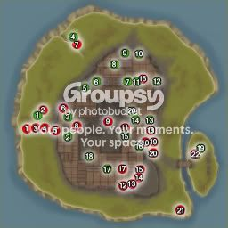

Morg City
Material : Ash Mogu
NPC
1 Waiting Adventure
2 Airport Officer [ไป Light Tower ซื้อบัตรที่ Millionaire Diamant ใน Merchant Guild Mountain]
3 Airport Pharmacy
4 Airport Waiter
5 Local Mudlark
6 Beene Chan
6 Funto
[เควส Skill Point]
7 Smuggle Man (Morg)
[ไป Sky Tower Island ใช้บัตร Sky Tower Pass]
8 Trained Mudlark [ข้ามฟากไปหา Trained Mudlark ที่อีกฝั่งราคา 100 G]
9 Otto Leader
9 Mudlark
10 Local Mudlark
11 Trained Mudlark [ข้ามฟากไปหา Trained Mudlark ที่อีกฝั่งราคา 100 G]
12 Pharmacy
13 Food Shop
14 Raupe
14 Merchant Guild
15 Item Maker
15 Adjudicater
16 Patrol Mercenary
17 Local Mudlark
18 Resurrection Soldier [บันทึกเป็นจุด Save Point]
19 Morg City Guard
20 Morg City Guard
21 Waiting Girl
[ดำเนินเควส Skill Point]
22 Airport Officer [ไป Warship Island ราคา 300 G]
Warp
1
Light Tower
2 Merchant Guild Mountain
[เควส Skill Point] [ซื้อบัตรไป Light Tower]
3 Goldo House
4
Sky Tower Island
5 Coal Industry Room
[ดำเนินเควสรับบัตร Sky Tower Pass]
6 Govern Smeltery [ซื้อ-ขาย Morg Coal]
7 Diamant Private Smeltar
[ดำเนินเควสลดราคาบัตรเข้า Light Tower]
8 Pet Morg Pub [รักษา Pet]
9 Morg Government
[เควสลดราคาบัตรเข้า Light Tower] [เควส Cleanup Campaign]
10 Fighter Guild Branch
[ดำเนินเควสลดราคาบัตรเข้า Light Tower]
11 Morg Mercenary Headquarter [เควสโจมตีมอนสเตอร์ใน Light Tower]
12 Morg Junk Shop
13 Gem Shop Morg
14 Tailor Shop Morg
15 Weapon Morg Shop
16 Morg Pub
17 Govern Smeltery [ซื้อ-ขาย Morg Coal]
18 Coal Mine Supervision Station
19
Warship Island
20 Black Weapon Shop
[ดำเนินเควสรับบัตร Sky Tower Pass]


 )
)

 ... เข้ามาเนียน
... เข้ามาเนียน